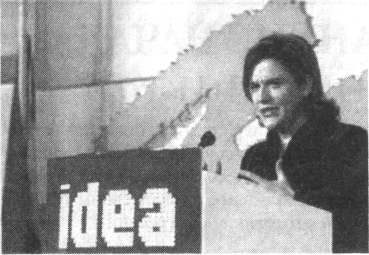

|

- Очерки психологии мировоззрения как основы просветительской практики ( Comments )
- От ничтожности к сопоставимости с Мирозданием или к вопросу о смысле существования человека ( Comments )
- Нобелевская лекция И.П.Павлова 'О русском уме' ( Comments )
- Проект "Бизнес, власть, общественность и СМИ в российской благотворительности" ( Comments )
- Дело Виталия Бунтова ( Comments )
- Дело Егора Новиковского ( Comments )
- Все мы сыны и дочери Человечества, но не собственность возомнивших о себе… ( Comments )
(все новости...)


| Главная-->Pro et contra-->Юдофобия-->Рахола Пилар - испанский политик (2010) | ||
|
|
Пилар Рахола (Испания)
БОРЬБА ИЗРАИЛЯ ECTЬ БОРЬБА ВСЕГО МИРА

Пилар Рахола (Pilar Rahola) - испанский политический деятель, журналистка, а также активист крайне левых в Испании. Её статьи публикуются в испанских газетах и в некоторых из наиболее важных газет Латинской Америки. В данной речи на одной из конференций она высказывается по поводу пропалестинских демонстраций.
«Почему мы не видим демонстраций против исламских диктаторских режимов, проводимых в Лондоне, Париже и Барселоне?
Или демонстраций против диктатуры в Бирме?
Почему нет демонстраций против рабского положения миллионов женщин, вынужденных жить без всякой юридической защиты?
Почему никто не демонстрирует против использования детей в качестве живых бомб в тех районах, где существует конфликт с исламом?
Почему мы не слышим голосов руководителей стран в поддержку жертв исламской диктатуры в Судане?
Почему мы не бываем свидетелями возмущения в связи с террористическими актами против Израиля?
Почему мы не слышим шумных протестов европейских левых против исламского фанатизма?
Почему они не защищают право Израиля на существование?
Почему поддержка палестинского дела так легко превращается в защиту палестинского терроризма?
И, наконец, вопрос на миллион долларов: почему левые в Европе и во всём мире до такой степени зациклены на двух таких наиболее прочных демократиях, как Соединённые Штаты и Израиль, но не желают говорить о самых худших диктатурах на планете?
Две самых прочных демократии страдают от наиболее кровавых атак терроризма - и левые даже ухом не ведут?
Возьмём, например, концепцию свободы. На каждом пропалестинском европейском форуме я слышу, как левые с пылом вопят: «Мы хотим свободы для народов!»
Это ложь. Их никогда не заботила свобода народов Сирии, Йемена, Ирана, Судана или других подобных стран.
И их никогда не тревожило то, что Хамас уничтожает свободу палестинцев.
Их заботит только одно - использовать концепцию свободы палестинцев в качестве оружия против свободы Израиля.
И последствием этой идеологической патологии являются манипуляции прессы.
Международная пресса наносит громадный вред, публикуя свои сообщения об израильско-палестинской проблеме.
Когда она говорит на эту тему, она не информирует - она занимается пропагандой.
Публикуя сообщения об Израиле, большинство журналистов забывает об этике журнализма.
И поэтому любое действие Израиля, направленное на самозащиту, превращается в резню, а каждая конфронтация - в геноцид.
Об Израиле было написано так много дурацких вещей, что не осталось ни одного обвинения, не высказанного против него.
В то же самое время эта пресса никогда не обсуждает сирийское или иранское вмешательство, направленное на поддержку террора против Израиля, или индоктринацию детей и коррупцию среди палестинцев.
А когда пресса говорит о жертвах, то о смерти или ранении каждого палестинца сообщается как о трагедии, но об израильских жертвах или не сообщается вообще, или говорится вскользь, а иногда и с явным презрением.
Позвольте мне также добавить кое-что об испанских левых. Можно привели много примеров, иллюстрирующих антиамериканские и антиизраильские настроения, определяющие испанских левых. Например, одна из левых партий Испании недавно исключила из своих рядов человека, который создал произраильский вебсайт.
Вот выдержка из постановления об исключении: «Наши друзья - народы Ирана, Ливии и Венесуэлы, угнетаемые империализмом, а не такие нацистские государства, как Израиль...».
В другом примере мэр-социалист городка Кампоцуэлос заменил день Шоа (Катастрофы), проводимый в память о жертвах Холокоста, днём палестинской Накбы, который отмечает траурное для палестинцев событие - образование государства Израиль, тем самым выразив своё пренебрежение 6 миллионами евреев, убитыми в Холокосте.
А что можно сказать о моём родном городе Барселона, где городской совет решил отметить 60-летие образования государства Израиль проведением недели солидарности с палестинским народом?
В частности, они пригласили Лейлу Халед, известную террористку 70-х годов и нынешнего лидера Народного фронта за освобождение Палестины, террористической организации, как её характеризует Европейский Союз.
Политкорректностью заражены даже речи президента Запатеро.
Его международная политика полностью укладывается в рамки идей помешанных левых, и во всех вопросах, связанных с Ближним Востоком, он проводит однозначно про-арабскую политику.
Я могу заверить вас, что в частных беседах Запатеро обвиняет Израиль в существовании конфликта на Ближнем Востоке, и политика министра иностранных дел Моратиноса отражает это.
То, что Запатеро решил во время ливанского конфликта покрасоваться в куфие, не является совпадением - это символ.
Испания испытала на себе самую кровавую террористическую атаку в Европе, и она находится под прицелом каждой исламской террористической организации.
Как я уже писала раньше, они убивают нас с помощью мобильных телефонов, получающих сигналы от спутников, подключённых к Средним векам.
Однако испанские левые проявляют самые сильные антиизраильские настроения в мире.
А потом они заявляют, что их антиизраильская позиция объясняется солидарностью.
И это полное безумие, которое я хочу осудить на этой конференции.
Заключение:
Я не еврейка. Идеологически я отношусь к левым, а по профессии я журналист. Но почему я не настроена против Израиля как мои коллеги?
Потому что передо мной, как перед не еврейкой, стоит историческая ответственность бороться против ненависти к евреям, а сейчас и против ненависти к их исторической родине, Израилю.
Борьба против антисемитизма не является обязанностью евреев, это обязанность не евреев.
Как журналист я обязана искать правду без каких-либо предубеждений, лжи и манипуляций. Никто не говорит правду об Израиле.
Как человек, относящийся к левым, которые стоят за прогресс, я обязана защищать свободу, культуру, гражданское образование для детей, сосуществование и законы, которые объявлены в Скрижалях Завета универсальными принципами.
Принципами, которые систематически уничтожаются исламским фундаментализмом».
Другими, словами, у меня как не еврейки и журналиста, относящейся к левому лагерю, существует тройной моральный долг перед Израилем, потому что если Израиль будет уничтожен, будут уничтожены свобода, современный мир и культура.
Борьба Израиля, даже если мир не хочет признавать это, является борьбой всего мира».
Перевод с английского Эдуарда Маркова. Публикуется с любезного разрешения автора.
Газета «Дайджест-Е», Украина, Харьков, № 6(131), июнь 2010г., с.2
Оформил в э/в Бродский Дмитрий 12 мая 2011г.
blog comments powered by Disqus